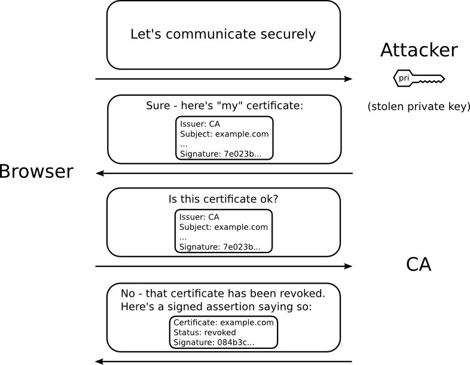

Certificates Revocation
INTRODUCTION
Certificate Revocation is an important concept in the PKI world. Imagine a simple scenario where you as an IT administrator issued out certificates to all of your company's employees in order for them to be able to authenticate themselves while using the company's VPN. In a case where an employee leaves and somehow carries with him the certificate that was issued to him, what is preventing your VPN server from disregarding the certificate as it now is an unauthorized connection. This is where certificate revocation comes in. In a nutshell, certificate revocation involves a list that contains the certificates that have been revoked (indexed by for example, a serial number) that is checked before validating a certificate.
What is also important to understand is that revocation is in general a difficult problem to solve. We will understand them better once we understand the basic concepts around how revocation and revocation checks are done in the PKI world.
Certificate Revocation Lists (CRL)
The lists that were used to maintain the revoked certificates is called the Certificate Revocation List. Certificate Authorities would maintain these lists with the revoked certificates that clients (in the above example, the VPN server) could reach out to and check for a certificates revocation status. The CRL is created and digitally signed by the CA that originally issued the certificates. The CRL contains dates for when each certificate was issued and when it expires. Clients could be any end point that is trying to verify if a certificate that is being used for identity is revoked or not (web browsers is a common example). Here are a few examples of how CAs used to maintain CRLs:


- CRLs have a lifetime: CRLs are only valid for a certain period of time just as certificates. When the CRL expires, the client usually deletes it from its cache. A new CRL is downloaded when a certificate is presented for verification; however, if a newer version of the CRL that lists the certificate under examination is on the server but the client is still using the CRL in its cache, the router does not know that the certificate has been revoked. The certificate passes the revocation check even though it should have been denied.
- Lack of scalability: This worked great in the past when there were few websites and certificates, but given today’s scale of the Internet, it’s practically infeasible for CA to manage and for client to download these huge lists, whenever they need to check for revocation status. If your infrastructure also contains extremely long lists, expect some latency.
- Various ways to download CRLs: The method of the CDP determines how the CRL is retrieved; some possible choices include HTTP, Lightweight Directory Access Protocol (LDAP), SCEP, or TFTP. HTTP, TFTP, and LDAP are the most commonly used methods.
Online Certificate Status Protocol (OCSP)
As pointed out above, the major problem with CRL is its size and the challenges in downloading and storing the lists on the clients. A solution to this problem was OCSP where instead of bothering with keeping updated lists on the clients, the client could simply reach out to the OCSP server and get the "OCSP status" for a particular certificate it would like to check against. Here is an overview of how OCSP works:

So there is an obvious advantage but there are weaknesses here too:
- They add up latency: Additional dependency and query between client and CA servers during TLS handshake, that adds up latency.
- Trusting the CA infrastructure: Poor, unreliable CA infrastructure. Prone to availability problems. The CA servers are targets for DoS attacks.
- Latency: Slow OCSP response adds up latency too.
- Privacy compromise: Browser leaks what website is being accessed and who accesses it to CA servers.
When to Use an OCSP Server
OCSP may be more appropriate than CRLs if your PKI has any of the following characteristics:
- Real-time certificate revocation status is necessary. CRLs are updated only periodically and the latest CRL may not always be cached by the client device. For example, if a client does not yet have the latest CRL cached and a newly revoked certificate is being checked, that revoked certificate will successfully pass the revocation check.
- There are a large number of revoked certificates or multiple CRLs. Caching a large CRL consumes large portions of Cisco IOS memory and may reduce resources available to other processes.
- CRLs expire frequently, causing the CDP to handle a larger load of CRLs.
How to implement CRLs or OCSPs:
Vendors have documentation on how revocation checks can be configured. CRLs are not widely used these days and OCSP is a popular solution (inspite of the weaknesses).
A few examples:
OCSP Stapling:
A relatively new approach to revocation is to use OCSP Stapling. OCSP Stapling involves the webserver (that is hosting the website of whose certificate is being checked), regularly polling the OCSP server (which is usually the CA) and serving the OCSP response to the end clients. The https server periodically polls OCSP server for revocation status of its own certificate(s), and sends OCSP response along with certificate (staples) to the client during TLS handshake in a ServerCertificateStatus message. OCSP responses are short-lived (around a week). They are signed by CA, so client can trust them.
OCSP stapling approach solves several issues, inherent to regular OCSP approach:
- Removes dependency between client and CA servers. No additional query, faster TLS handshake.
- Protect website visitors privacy. Since browsers don’t talk to CA servers any more, they don’t leak browsing activity.
- More resistant to CA server availability issues, since web server caches OCSP responses which are valid for several days.
- Less load on CA servers, since number of https servers is less than number of clients/visitors.

Weakness of OCSP Stapling: OCSP stapling is an option and not mandatory. Clients don’t know whether to expect/require stapled OCSP responses from a website or not. If an attacker has a stolen revoked certificate it can be used without stapling. Browsers will fallback to regular OCSP, which can again be blocked, and browser will accept the certificate. We still have soft-fail behavior with a false sense of security.
An important note about how browsers have some slightly better ways to deal with revocation:
Browsers are possibly the clients that would need to use the CRL feature the most due to Given dependency to poor and not-reliable CA infrastructure, browsers/clients usually tend to use soft-fail (ignore) behavior, when they don’t receive OCSP response in a timely manner or encounter some errors, assuming that certificate is valid and allowing to access the website. Some browsers just show warning, that user can bypass. Chrome, for example, does not use OCSP at all, and use its own proprietary mechanism, called CRLSet. The reason for such soft-fail behavior is because unavailable CA servers should not block access to all websites, using their certificates.
Soft-fail behavior gives us false sense of security — it’s OK when you get revocation warning, but when you don’t — you’re in doubt if cert is valid indeed or if there is an OSCP infrastructure related issue. For example, attacker can block OCSP traffic and cause revocation checks to pass. [Source: https://medium.com/@alexeysamoshkin/how-ssl-certificate-revocation-is-broken-in-practice-af3b63b9cb3]
Additional Read: About how browsers warn about failed revocation checks with